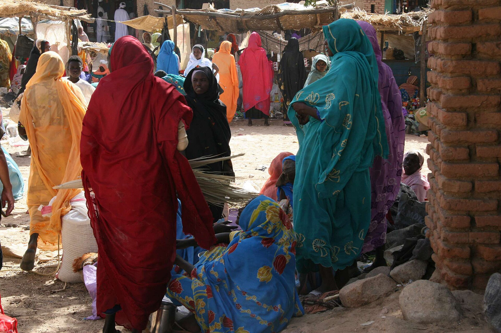
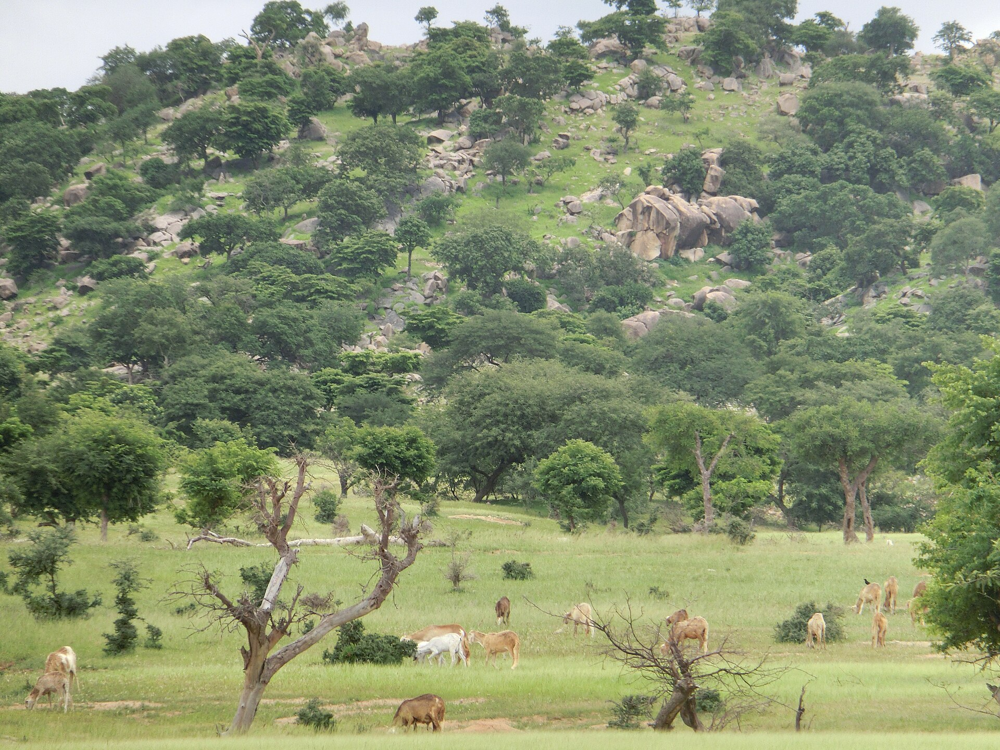

Darfour Community League started with a small group of Darfuri families in Edmonton who wanted to do something concrete about what was happening back home. What began as informal fundraising among friends has grown into an organized effort with a clear focus: restoring the basic infrastructure that more than twenty years of civil war destroyed.
We're not a large international NGO. We're a community group — which means every donation, every partnership, and every dollar spent is something our members can see and vouch for directly.


Darfur's civil war lasted more than twenty years, and the toll went far beyond the immediate loss of life. Schools closed. Clinics shut down. Water systems fell apart. Power infrastructure was destroyed. When the fighting eased, the state was left to rebuild almost everything from the ground up.
That's the gap Darfour Community League exists to help close, one program and one partnership at a time. See our full mission for how we break that down.
We keep our operating costs low by running as a volunteer-led community group rather than a large staffed nonprofit. That means more of every donation goes toward the five focus areas rather than overhead.
We publish where funds are allocated and partner with established charity organizations for larger infrastructure projects, so contributions can be pooled with organizations that already have logistics on the ground in Darfur.
Placeholder profiles below — replace with your board members once finalized.
Role placeholder
Role placeholder
Role placeholder
Whether it's a one-time gift or an ongoing partnership, every contribution goes toward services Darfur lost during the war.
See how to help